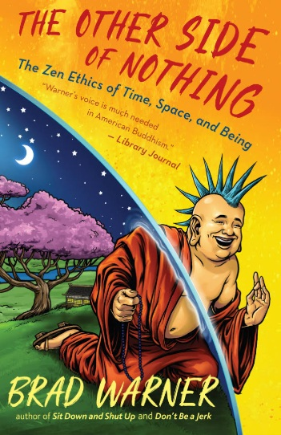
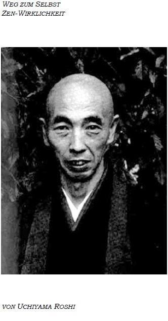

Vertiefung
Hier findest du eine Liste von Inhalten, die mich auf meinem meditativen Weg inspiriert haben. Der meditative Weg ist allerdings ein sehr individueller Weg. Suche dir also die Quellen, die dich inspirieren. Wenn du hier etwas findest - gut. Wenn nicht, gibt es noch eine Menge andere Quellen zu entdecken.

YouTube-Kanal von Muho (Fragen zur Meditation und zum Leben)

Vorträge zu verschiedenen buddhistischen Themen

Ein etwas anderer Blick auf Meditation (englisch)
Zwei Theravada Mönche besprechen die wichtigsten buddhistischen Lehrreden (englisch)

Uchiyama erklärt den Sinn der Meditation und wie man sie im Alltag anwendet

Wichtige buddhistische Konzepte alltagstauglich übersetzt und erklärt
Eine alltagstaugliche Erklärung, wie man der Welt mit Mitgefühl begegnen kann
Ajahn Chah beleuchtet viele Aspekte des Weges